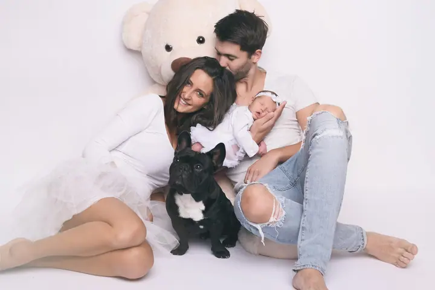
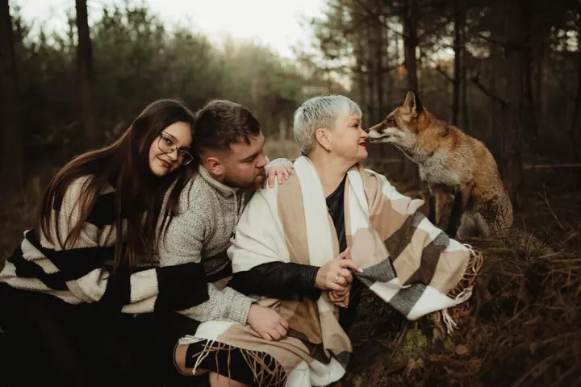

Rodinné focení
Fotím rodiny venku v přírodě i u mě ve studiu v Lounech. Nejvíc mě baví děti, protože si jejich duše zaslouží spoustu lásky a pozornosti.

Jmenuji se Lenka Němečková a fotografií se zabývám přes 16 let. Nejraději fotím rodiny venku v přírodě, maličké děti v náručí rodičů a lidi přesně takové, jací opravdu j…
Rezervovat termínJsem žena a máma dvou báječných dcer. Maluji, tvořím, přednáším a fotografuji. Vystudovala jsem obor Výtvarná kultura na Západočeské univerzitě v Plzni a diplomovou práci jsem psala z fotografie. Devět let jsem pak učila fotografii a užité umění na ZUŠ Louny.


Fotografování pro mě není jen práce. Je to způsob, jak zachytit duši okamžiku a pravé emoce. Proto při focení nespěchám, nechávám děti být dětmi a dávám prostor tomu, co se mezi vámi děje samo.
Vše, co dělám, je propojené s uměním, tvořivostí a rovnováhou. Kromě focení vedu ve studiu ARTUM kurzy pro děti i dospělé, věnuji se arteterapii a tvořím obrazy na zakázku. Do všeho dávám maximum energie, protože dělám to, co mě naplňuje.
Co fotím
Fotím rodiny venku v přírodě i u mě ve studiu v Lounech. Nejvíc mě baví děti, protože si jejich duše zaslouží spoustu lásky a pozornosti.
Při focení portrétu hledám, kdo opravdu jste. Chci zachytit duši okamžiku a pravé emoce, ne jen hezkou pózu.
Svatební fotografie je jedna z oblastí, na které se specializuji. Zajímají mě skutečné emoce a příběh vašeho dne.
Ve studiu ARTUM v Lounech vedu celoroční fotografické kurzy pro děti a workshopy pro dospělé, kteří chtějí začít fotit.
Fotografie jsou ilustrační
Postup
Do zprávy uveďte, o jaké focení máte zájem, a navrhněte termín a čas, který vám vyhovuje. Ozvat se můžete i SMS nebo přes WhatsApp.
Společně vybereme místo, ať už to bude moje studio v Lounech, nebo příroda v okolí, a probereme, co od fotek čekáte.
Při focení nechávám prostor dětem i vám. Nejkrásnější chvíle vznikají, když se přestanete soustředit na foťák.
Vybrané fotografie pečlivě upravím a předám vám je jako hotový příběh vašeho dne.
Otázky
Fotím ve svém studiu ARTUM v České ulici 171 v Lounech, nebo venku v přírodě. Místo vybereme spolu podle toho, co vám bude bližší.
Ano, rodiny s maličkými dětmi fotím moc ráda. Termín přizpůsobíme tak, aby byl pohodlný pro miminko i pro vás.
Cena záleží na typu focení a rozsahu. Napište mi, o co máte zájem, a pošlu vám aktuální nabídku.
Ano. Ve studiu ARTUM vedu s Ladou Baladovou celoroční fotografické kurzy pro děti od 7 do 15 let (1 500 Kč měsíčně, nejvýš 7 dětí v kurzu) a fotografické workshopy pro dospělé.